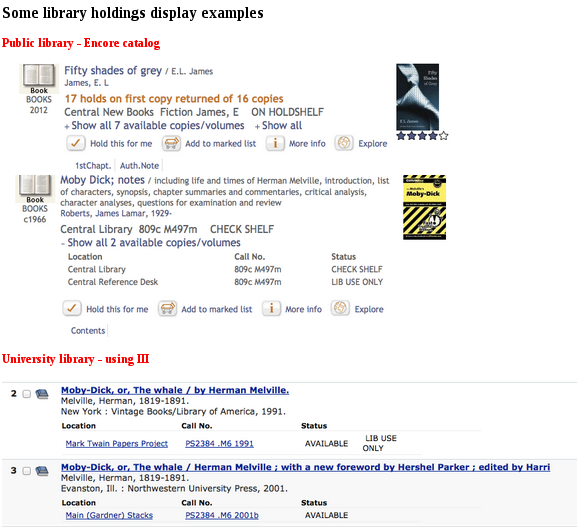
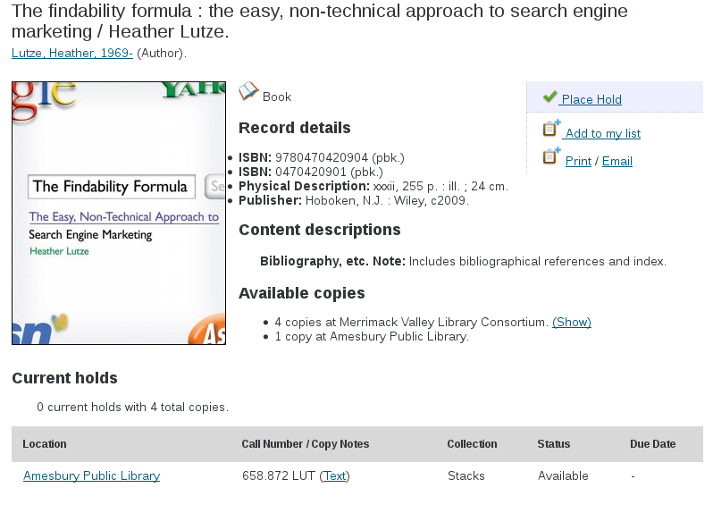

schema.org in the wild
Schema.org: what it means for you and your library!
LITA Forum 2014
Systems Librarian, Laurentian University
Getting from here to there
Where "here" is MARC21 and "there" is an RDA / BIBFRAME / glorious linked open data world
Why we can't just wait for it to happen
- Discovery layers solved all of our users' problems, right?
- Well... no.
Rushing headlong towards closed, unlinkable data
- Primo: http://primo.tug-libraries.on.ca/robots.txt
- Encore: http://encore.sudbury.library.on.ca/robots.txt
- EBSCOHost Discovery Service: authentication required
- WorldShare Management Services: http://unm.worldcat.org/robots.txt (better, but generic: WorldCat is the primary beneficiary)
The saddest robots.txt a library catalog can offer
User-Agent: *
Disallow: /
AKA "Machines are not welcome here."
So why should we trust them to get us to a working linked open data world?
Some destinations may be unreachable
From Jon Phipps on RDA issue #42, 2014-11-05
This [...] revolves around specifically understanding the extended meaning of each attribute in a bibliographic context, and within that context the bibliographic culture of the community using a particular language to convey that meaning.
Instead, iterate on what we already have
Library holdings as schema:Product + schema:Offer
Time for a syllogism
- Search engines want to connect people to products
- Libraries want to provide useful resources to people
... ergo ... - Libraries should present their resources as products that search engines can offer to people
GoodRelations e-commerce vocabulary
- An agent (e.g. a person or an organization),
- An object (e.g. a camcorder, a house, a car,...) or service (e.g. a haircut),
- A promise (offer) to transfer some rights (ownership, temporary usage, a certain license, ...) on the object or to provide the service for a certain compensation (e.g. an amount of money), made by the agent and related to the object or service, and
- A location from which this offer is available (e.g. a store, a bus stop, a gas station,...).
Library holdings-as-schema.org vocabulary
- A
agentschema:Library that offers goods, - A
objectschema:Product (e.g. a book, DVD, vinyl record, map), - A
promiseschema:Offer to provide the product, usually for free, made by the library - A
locationschema:availableAtOrFrom from which this offer is available (e.g. a section of the library).
Hey, it turns out AbeBooks.com uses Product / Offer!
Tested against Karen Coyle's holdings gallery
Unstructured -> structured -> linked data
- Bibliographic records
- Record types: Book, Map, MusicRecording, fallback to CreativeWork
- Holdings, using the schema:Product / schema:Offer model
- Libraries
- Hours of operation
- Web site
- Location
- Contact information
- Branch relationships
Iterating towards a more open, linked future
Why schema.org?
- It is a de-facto generalized vocabulary
- It is available now, and already widely used
- It is relatively simple to embed into existing HTML
- It can co-exist with much more specialized vocabularies
Adding schema.org to an existing HTML page
- Stored data -> transform/template -> human readable HTML page
- Stored data -> transform/template -> machine and human readable HTML page
Human readable page
Machine readable page
Human readable page (HTML)
<div>
<h1>The findability formula : the easy, non-technical approach
to search engine marketing / Heather Lutze.</h1>
<div>
Lutze, Heather, 1969- (Author).
</div>
</div>Machine readable page (HTML)
<div vocab="http://schema.org/" typeof="Book Product"
resource="#schemarecord">
<h1 property="name">The findability formula : the easy, non-technical
approach to search engine marketing / Heather Lutze.</h1>
<div>
<span typeof="Person" property="author" resource="#schemacontrib1">
<span resource="#schemacontrib1">
<span property="name">Lutze, Heather,</span>
<span property="birthDate">1969</span>-
</span> (<span property="description">Author</span>).
</span>
</div>
</div>Making catalogues "of the web"
- Allow machines to crawl your pages:
robots.txtand persistent URIs - Embed machine-readable
schema.orgmetadata into ordinary catalogue pages - Generate sitemaps for your record detail pages
- Tell search engines and aggregators about the sitemaps
Unstructured -> structured -> linked data
- Bibliographic records
- Record types: Book, Map, MusicRecording, fallback to CreativeWork
- Holdings, using the schema:Product / schema:Offer model
- Libraries
- Hours of operation
- Web site
- Location
- Contact information
- Branch relationships
Next steps
- Things, not strings: express relator codes and controlled headings as linked data
- But strings are better than nothing: use schema:Role for relator terms
- Extend Koha and VuFind's support for expressing library metadata
Teach your systems to speak RDFa + schema.org
- Practical linked data for open source preconference
- My portion was a hands-on, self-guided tutorial teaching RDFa + schema.org in library systems:
- Mark up bibliographic record detail pages
- Express library holdings as schema.org
Offerentities - Mark up library pages with opening hours, contact info, etc
- Build a simple union catalogue in five minutes using Google Custom Search Engine
- Build a proof of concept sitemap crawler / RDFa extractor
- All materials available for free under a CC-BY-SA license!
- Go to https://coffeecode.net
- You might need to wade through a blog post or two
Other open source library systems of note
- Blacklight

- Islandora

- ... ?
Beyond library systems
Bryn Mawr Classical Review
- Second oldest online scholarly journal in the humanities (1990)
- Currently implemented in SGML and Tcl (!)
- Proof of concept: reviews expressed as schema:Review
BMCR: schema:Review and schema:Book
<http://example.org/2014-01-02#review_text> a schema:Review ;
schema:author <http://example.org/2014-01-02#review_author> ;
schema:itemReviewed <http://example.org/2014-01-02#review_item1> ;
schema:name "Bryn Mawr Classical Review 2014.01.02" ;
schema:reviewBody """The temple dedicated to Castor and Pollux...""" .
<http://example.org/2014-01-02#review_author> a schema:Person ;
schema:address "Royal Holloway, University of London" ;
schema:familyName "Withycombe-Taperell" ;
schema:givenName "Lily" ;
schema:name "Lily Withycombe-Taperell" .
<http://example.org/2014-01-02#review_item1> a schema:Book ;
schema:author "Claes B. Persson",
"Jan Zahle",
"Kjell Aage Nilson",
"Siri Sande" ;
schema:datePublished "2009" ;
schema:isbn "9788882654979" ;
schema:name "The Temple of Castor and Pollux III: ..." ;
schema:numberOfPages "285" ;
schema:publisher "\"L'Erma\" di Bretschneider" .Bryn Mawr Classical Review
- Next steps:
- Express authors, places as entities
- Add external identifiers to reviewed works
- Collaboration with Karen Coyle and Camilla MacKay
code4lib journal
- Online journal; customized WordPress instance
- Patches to add:
- Expressing articles as schema:Article
- Authors as full Person entities with a customized Co-Authors Plus
- (Soon): Issues listed as Periodical and PublicationIssue
Addressing gaps in schema.org
In 2013 schema.org moved to W3C WebSchemas as the public forum for enhancement proposals
Enter the W3C schema.org Bibliographic Extension Community Group
- AKA
SchemaBibEx
- A rag-tag group of linked data bibliographic enthusiasts trying to establish consensus
- Using open source library systems (Evergreen, Koha, VuFind) as proofs of concept / reference implementations
Some schemabibex wins
- Early: moving "citation" from MedicalScholarlyArticle to CreativeWork
- Middle: Holdings-as-Offers as a best practice, with decommercialized descriptions
- Most recently: Periodicals and CreativeWork relationships
Role-playing
- Not all possible roles have relator codes or the equivalent in other vocabularies
- See IMDB examples: Special effects model maker, Rigger, Boom swinger
Simple approach for controlled values
Add the controlled URI to the corresponding schema.org @property:
<div vocab="http://schema.org/" typeof="Movie"
resource="http://www.freebase.com/m/04zl8">
<h1 property="name">Monty Python and the Holy Grail</h1>
<h2>Credits</h2>
<div typeof="Person"
property="contributor http://id.loc.gov/vocabulary/relators/anm">
Animator: <span property="name">Terry Gilliam</span>
</div>
</div>
schema:Role can replace and augment any Person
Example credits
<div>
<h1>Monty Python and the Holy Grail</h1>
<h2>Credits</h2>
<div>Special Møøse Effects: OLAF PROT</div>
</div>
Example credits: basic role
<div vocab="http://schema.org/" typeof="Movie"
resource="http://www.freebase.com/m/04zl8">
<h1 property="name">Monty Python and the Holy Grail</h1>
<h2>Credits</h2>
<div property="contributor" typeof="Person">
Special Møøse Effects: <span property="name">OLAF PROT</span>
</div>
</div>
Example credits: enhanced Role
<div vocab="http://schema.org/" typeof="Movie"
resource="http://www.freebase.com/m/04zl8">
<h1 property="name">Monty Python and the Holy Grail</h1>
<h2>Credits</h2>
<div property="contributor" typeof="Role">
<span property="roleName">Special Møøse Effects</span>:
<span property="contributor" typeof="Person">
<span property="name">OLAF PROT</span>,
</span>
</div>
</div>
But...
roleName is not quite there yet.
Promoting "namedPosition" to Role and renaming the property "roleName" or the like sounds good to me.
Vicki Tardif Holland <vtardif@google.com>
From static structured data to APIs?
- schema.org Actions provide directly actionable links (Gmail for example)
- Many action types could be adopted by libraries:
- SearchAction
- ReadAction
- WatchAction
- ListenAction
- ViewAction
- OrderAction (Request)
- BorrowAction (Borrow or Renew)